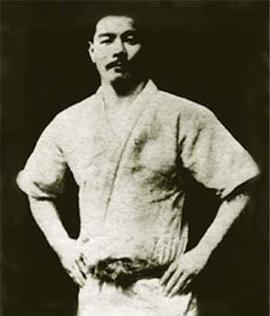

Origenes
Durante la apertura del Japón a Occidente, algunos maestros del recién creado arte del judo migraron desde el Japón hacia otros continentes, viviendo de la enseñanza de las tradiciones marciales y de las luchas promocionales que realizaban. Uno de estos practicantes fue Mitsuyo Maeda, quien se dio a conocer en el mundo del espectáculo de aquel entonces como el Conde Koma. Maeda fue uno de los grandes judocas del Kodokan en esa época y uno de los maestros que recorrieron el mundo, en busca de fama y fortuna. Maeda salió de Japón en 1904 y visitó varios países dando clases de judo y aceptando retos de distintos luchadores de boxeo, savate, lucha libre y varios otros artistas marciales, antes de llegar finalmente a Brasil el 14 de noviembre de 1914 a Belem do Pará; lugar donde hoy existe la Academia Conde Coma. Allí se hospedó en la casa del aristócrata brasilero llamado Gastão Gracie, un socio del circo americano en Belém que ayudó a Maeda en sus exhibiciones y negocios. Los hijos de Gastão Gracie vieron una demostración de Maeda en el Teatro Da Paz y decidieron aprender judo o "kano jiu-jitsu", como era conocido por entonces. Maeda los aceptó como estudiantes, y les entrenó en estas artes al lado de Soshihiro Satake y otros judocas locales. Otro de los estudiantes de Maeda sería Luiz França, fundador de otra línea del jiu-jitsu brasileño.
En 1925 en Río de Janeiro se abrió la primera academia de "Gracie Jiu-jitsu", como sus dueños denominaron al judo tradicional de ese entonces. Carlos invitó a sus hermanos para que le ayudasen a promocionar su academia, y para esto desarrollaron una estrategia comercial poco común. Desafiaban a cualquiera que dudara de la eficacia del jiu-jitsu en un combate sin reglas ni límite de tiempo o peso. El éxito por la efectividad de este sistema en las luchas reales comenzó a darle prestigio y cada vez más gente se presentaba en la academia de los hermanos Gracie a entrenar. Por otro lado, Carlos se hizo cargo de criar y educar a sus hermanos menores llamados George, de catorce años, y Hélio, de doce años. Desde entonces, Carlos compartió sus conocimientos con sus hermanos y estos adaptaron y perfeccionaron las técnicas, dadas sus propias condiciones. También les enseñó su filosofía de vida y los conceptos de nutrición natural, siendo un pionero en la creación de una dieta especial para atletas: la Dieta Gracie, que se transformó en sinónimo de salud dentro del Gracie Jiu-jitsu.
Al entrenar y desarrollar una técnica eficaz para la autodefensa, Carlos Gracie vio en el arte del jiu-jitsu una manera de formarse y convertirse en un hombre más tolerante, respetuoso y seguro. Con el fin de demostrar la superioridad del jiu-jitsu y crear una tradición familiar, Carlos retó a los más grandes boxeadores y luchadores de su época y luego pasó a gestionar las carreras de sus hermanos, como profesores y competidores.